software engineer
Wasif Malik · Go, systems, Next.js. Same work, two ways in. Pick one; you can switch any time.
or just the résumé pdf ↗


Wasif Malik · Go, systems, Next.js. Same work, two ways in. Pick one; you can switch any time.
or just the résumé pdf ↗